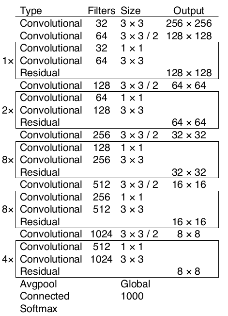
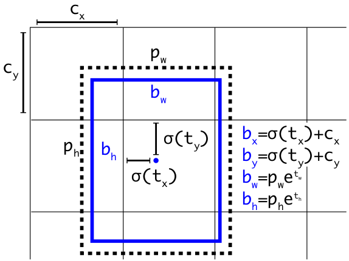

yolo_v3¶
论文地址 YOLOv3: An Incremental Improvement
网络结构图¶


上面三个方框内表示 yolov3的三个基本组件 ：
CBL：Yolov3网络结构中的最小组件，由Conv+Bn+Leaky_relu激活函数三者组成
Res unit：借鉴Resnet网络中的残差结构，让网络可以构建的更深
ResX：由一个CBL和X个残差组件构成，是Yolov3中的大组件。每个Res模块前面的CBL都起到下采样的作用(对照cfg文件)， 因此经过5次Res模块后，得到的特征图是608->304->152->76->38->19大小
整个YOLOv3结构中是没有池化层和全连接层的。前向传播中，张量尺寸变换是通过改变卷积核的步长来实现的。YOLOv2和YOLOv3一样，backbone都会将输出特征图缩小到输入的1/32，所以，通常要求输入图片是32的倍数。
YOLOv3借鉴了金字塔特征(FPN)思想，小尺寸特征图用于检测大尺寸物体，大尺寸特征图检测小尺寸物体。
YOLOv3总共输出3个特征图，第一个特征图下采样32倍，第二个特征图下采样16倍，第三个下采样8倍。输入图像经过DarkNet-53(无全连接层)，再经过Yoloblock生成的特征图被当作两用，第一用为经过3*3卷积层、1*1卷积之后生成特征图一，第二用为经过1*1卷积层加上采样层，与DarkNet-53网络的中间层输出结果进行拼接，产生特征图二。同样的循环之后产生特征图三。
concat操作：源于DenseNet网络的设计思路，将特征图按照通道维度直接进行拼接，例如8*8*16的特征图与8*8*16的特征图拼接后生成8*8*32的特征图。Concat和cfg文件中的route功能一样。
add操作：张量相加，不会扩充维度，如104*104*128和104*104*128相加，结果还是104*104*128。add和cfg文件中的shortcut功能一样。
上采样层(upsample)：作用是将小尺寸特征图通过插值等方法，生成大尺寸图像。例如使用最邻近插值算法，将8*8的图像变换为16*16。上采样层不改变特征图的通道数。
配置文件解析¶
参考文档 yolov3.cfg
Backbone¶
Backbone中卷积层的数量
每个ResX中包含1+2*X个卷积层，因此整个骨干网络Backbone中一共包含1+(1+2*1)+(1+2*2)+(1+2*8)+(1+2*8)+(1+2*4) = 52， 再加上一个FC全连接层，即可以组成一个Darknet53分类网络。不过在目标检测Yolov3中，去掉了FC层，为了方便称呼，仍然把Yolov3的主干网络叫做Darknet53结构。
YOLOv3 采用 Darknet-53 来进行特征提取。

整个v3 backbone里是没有池化层和全连接层的。前向传播过程中，张量尺寸变换是通过改变卷积核的步长来实现的，比如stride=(2,2),等于将图像边长缩小2， yolov3和yolov2一样，backbone都会将输出特征图缩小到输入的1/32(但yoloV2是通过最大池化来进行的)，所以通常要求输入图片是32的倍数。

Output¶
YOLOv3是在(13*13,26*26,52*52)三个不同尺度的特征图上进行预测的，一个特征图上每个grid cell预测3个bounding box，每个box有(x,y,w,h,confidence)和每个类别概率预测值。假设特征图的大小为N，对于COCO数据集，则每个特征图的输出张量为 \(N \times N \times [4 + 1 + 80]\) 。
Anchor box (bounding box prior)
YOLOv1中，网络直接检测框的宽、高。YOLOv2中改为基于先验框的变化值，对于预测对象的尺度进行了约束，降低网络学习难度。YOLOv3为每种FPN预测特征图设定3种 anchor box，共聚类出9种尺寸的anchor box。
分配上，在最小的13*13特征图上由于其感受野最大故应用最大的anchor box (116x90)，(156x198)，(373x326)，（这几个坐标是针对416*416下的，当然要除以32把尺度缩放到13*13下），适合检测较大的目标。中等的26*26特征图上由于其具有中等感受野故应用中等的anchor box (30x61)，(62x45)，(59x119)，适合检测中等大小的目标。较大的52*52特征图上由于其具有较小的感受野故应用最小的anchor box(10x13)，(16x30)，(33x23)，适合检测较小的目标。
YOLOv3中取消了YOLOv2每个grid cell只负责预测一个对象的限制，v3中的3个bounding box都可以预测对象，当然他们都对应不同的ground truth。
Bounding Box Prediction
网络为每个检测框预测4个坐标， \(t_{x},t_{y},t_{w},t_{h}\)
\[\begin{split}b_{x} = \sigma(t_{x})\ + \ c_{x}\\ b_{y} = \sigma(t_{y})\ + \ c_{y}\\ b_{w} = p_{w}e^{t_{w}}\\ b_{h} = p_{h}e^{t_{h}}\\\end{split}\]如下图所示， \(\sigma(t_{x}), \sigma(t_{y})\) 是矩形框中心点相对于该grid cell 左上角坐标 \(c_{x},c_{y}\) 的偏移量， \(p_{w}, p_{h}\) 是先验框的宽和高。通过上述公式，计算出实际预测框的宽高。

{kind=link}
Confidence
\[Pr(object)*IOU(b,object) = \sigma(t_{o})\]YOLOv3只会对1个prior进行操作，也就是那个最佳prior。而logistic回归用于对anchor包围的部分进行一个目标性评分，从9个anchor priors中找到objectness score(目标存在可能性得分)最高的一个。
Class Prediction
不使用YOLOv2的softmax，YOLOv3使用独立的逻辑分类器，对图像中检测到的对象执行多标签分类。使用二元交叉熵损失来进行类别预测。
Training¶
Loss
\[\begin{split}loss(object) = \lambda_{coord}\sum_{i=0}^{K \times K}\sum_{j=0}^{M}\mathbb{1}_{ij}^{obj}(2-w_{i} \times h_{i})[(x_{i} - \hat{x}_{i})^2 + (y_{i} - \hat{y}_{i})^2]\\ + \ \lambda_{coord}\sum_{i=0}^{K \times K}\sum_{j=0}^{M}\mathbb{1}_{ij}^{obj}(2-w_{i} \times h_{i})[(w_{i} - \hat{w}_{i})^2 + (h_{i} - \hat{h}_{i})^2]\\ - \sum_{i=0}^{K \times K}\sum_{j=0}^{M}\mathbb{1}_{ij}^{obj}[\hat{C}_{i}log(C_{i}) + (1 - \hat{C}_{i})log(1-C_{i})]\\ - \ \lambda_{noobj}\sum_{i=0}^{K \times K}\sum_{j=0}^{M}\mathbb{1}_{ij}^{noobj}[\hat{C}_{i}log(C_{i}) + (1 - \hat{C}_{i})log(1-C_{i})]\\ - \sum_{i=0}^{K \times K}\mathbb{1}_{ij}^{obj}\sum_{c \ \in \ classes}[\hat{p}_{i}(c)log(p_{i}(c)) + (1-\hat{p}_{i}(c))log(1-p_{i}(c))]\end{split}\]
Which bounding box
如何在训练中确定哪个bounding box负责某个某个ground truth呢？方法是求出每个grid cell中每个anchor box与ground truth box的IOU(交并比)，IOU最大的anchor box对应的bounding box就负责预测该ground truth。
我们训练输出的是 \(t_{x},t_{y},t_{w},t_{h}\) ，那么在计算误差时，也是利用真实框的 \(\hat{t}_{x},\hat{t}_{y},\hat{t}_{w},\hat{t}_{h}\) 这几个值计算误差。
\[\begin{split}g_{x} = \sigma(t_{x})\ + \ c_{x}\\ g_{y} = \sigma(t_{y})\ + \ c_{y}\\ g_{w} = p_{w}e^{t_{w}}\\ g_{h} = p_{h}e^{t_{h}}\\\end{split}\]可以根据真实框的 \(g_{x}、g_{y}、g_{w}、g_{h}\) 求出真实框的 \(\hat{t}_{x},\hat{t}_{y},\hat{t}_{w},\hat{t}_{h}\)
\[\begin{split}\sigma(\hat{t}_{x}) = g_{x} - c_{x}\\ \sigma(\hat{t}_{y}) = g_{y} - c_{y}\\ \hat{t}_{w} = log(g_{w}/a_{w})\\ \hat{t}_{h} = log(g_{h}/a_{h})\end{split}\]
Confidence
\[C_{i}^{j} = Pr(object)*IOU(b,object)\]其中 \(C_{i}^{j}\) 表示第 i 个grid cell 的第 j 个 bounding box 的置信度。训练中 \(\hat{C}_{i}^{j}\) 表示真实值， \(\hat{C}_{i}^{j}\) 的取值是由grid cell的bounding box是否负责预测某个对象决定的。如果负责， \(\hat{C}_{i}^{j} = 1\)，否则 \(\hat{C}_{i}^{j} = 0\)。
小技巧
如何确定某个grid cell的bounding box是否负责预测该grid cell中的对象？该grid cell的所有anchor box 与某个 ground truth 的IOU最大的那个anchor box 对应的bounding box 负责预测该对象。